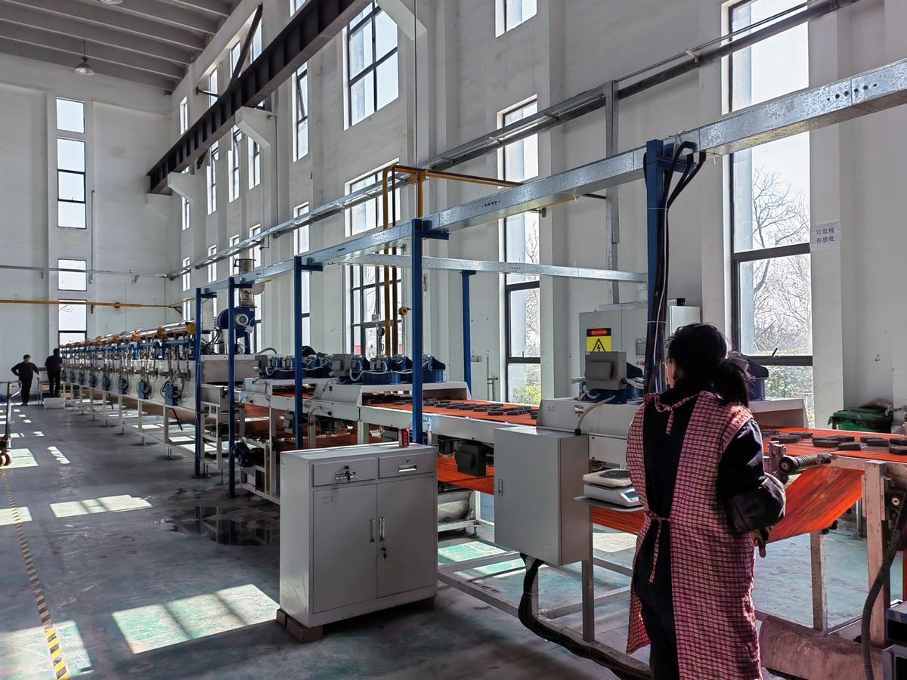
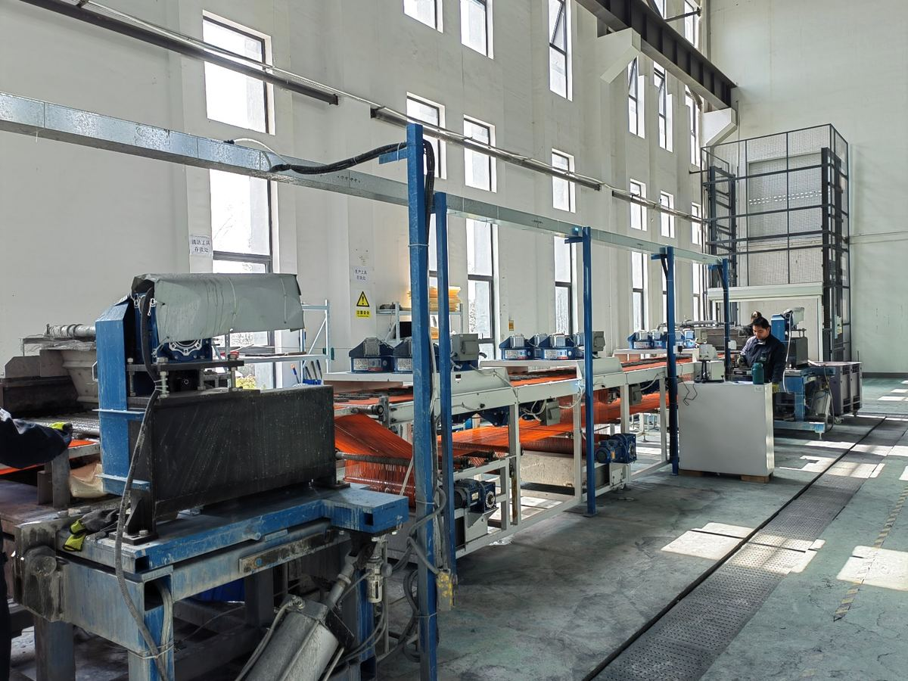
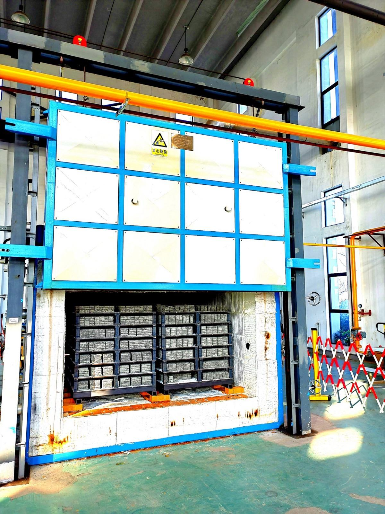
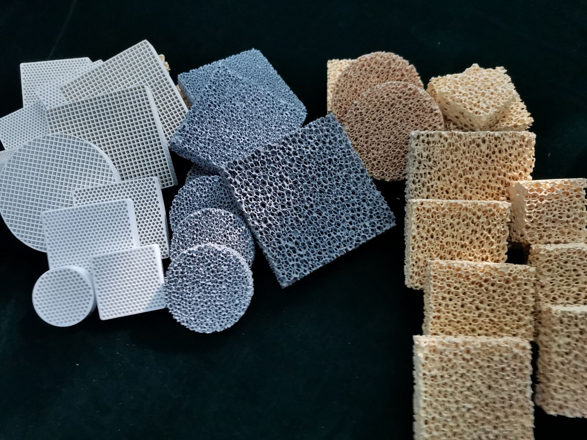
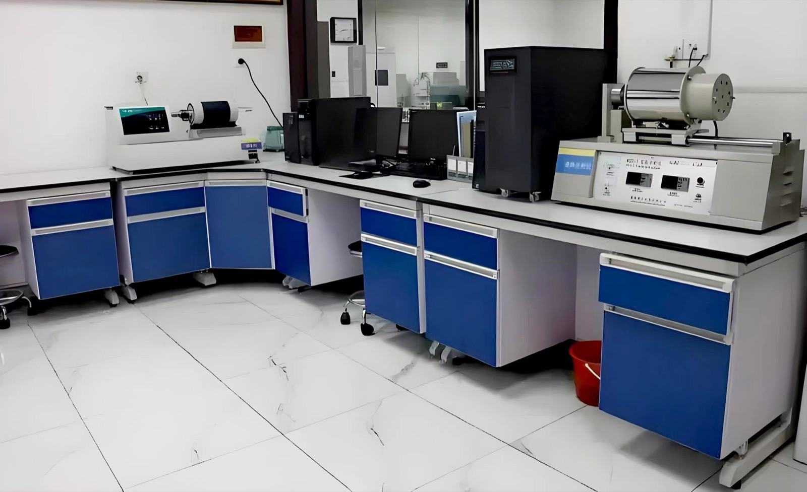
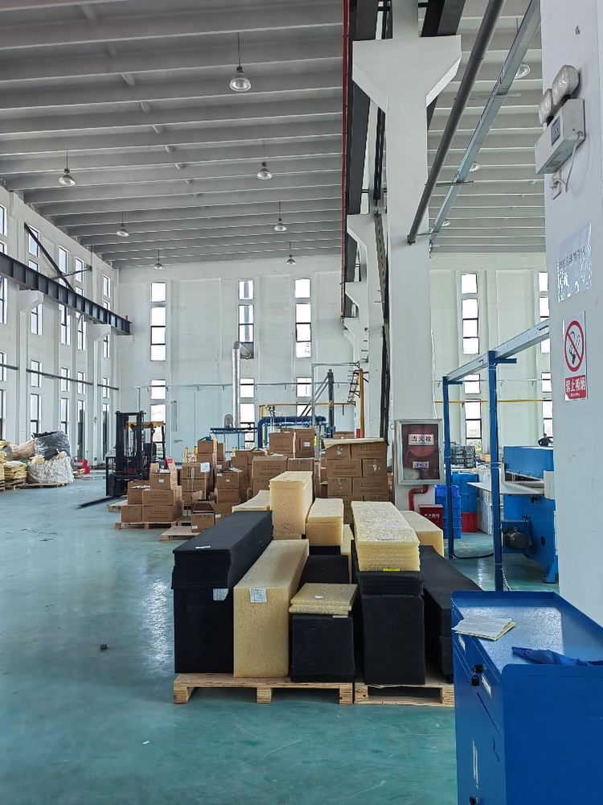
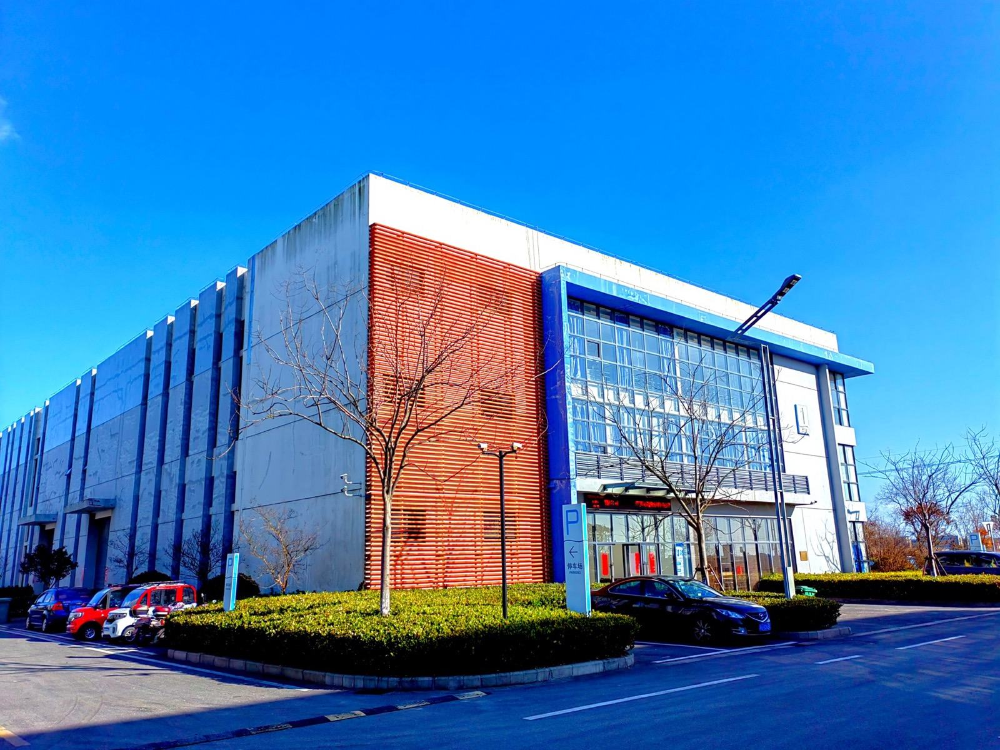
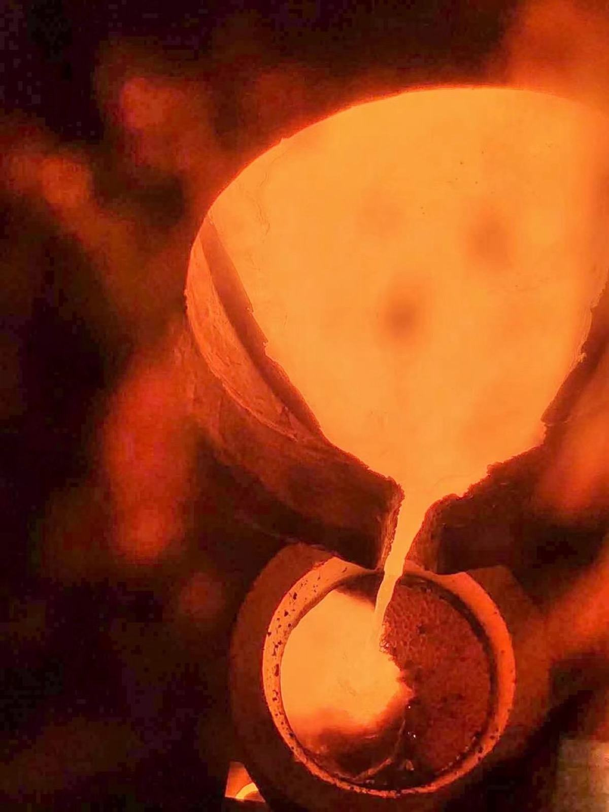
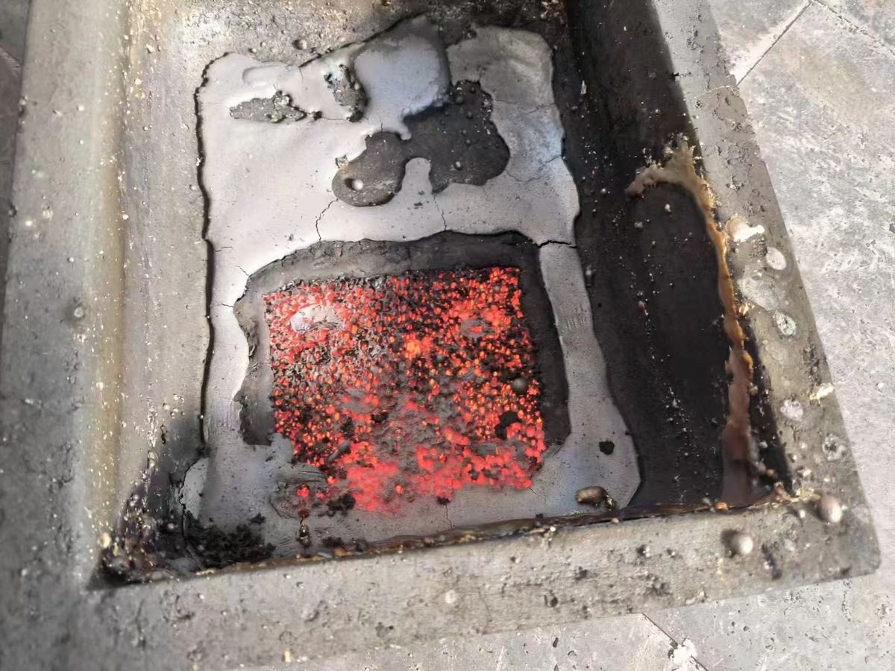

From our kiln to your pour从我们的窑炉 到您的浇注
Dexin makes ceramic foam filters, fireproof insulation and casting auxiliaries in its own plants in Suzhou and Nantong, China, since 2005.德鑫自2005年起，在苏州、南通自有工厂生产泡沫陶瓷过滤器、陶瓷防火隔热材料与铸造辅材。
How a Dexin filter is made and shipped德鑫过滤器的生产与发运流程
-

2 lines · 2,000 m³ a year2条产线 · 年产2000 m³Coated浸浆
On our foam-ceramic lines the foam takes up a slurry of German-imported SiC, alumina or zirconia.在泡沫陶瓷生产线上，泡沫浸挂由德国进口碳化硅、氧化铝或氧化锆制成的浆料。
-

Rolled and dried挤浆与干燥
Rollers press out excess slurry to keep the pores open, then the pieces dry.辊压挤出多余浆料、保持孔道通透，随后干燥。
-

1,600 °CFired烧成
Shuttle kilns fire at up to 1,600 °C; the foam burns away and the ceramic stays.梭式窑最高1600℃烧成，泡沫烧尽，留下陶瓷骨架。
-

Cut to size激光切割
Laser cutting holds every filter to tight, repeatable dimensions.先进激光切割工艺，尺寸精度高、一致性好。
-

ISO 9001Tested检测
Our lab checks strength, pore size and dimensions, batch by batch.自有实验室逐批检测强度、孔径与尺寸。
-

Packed包装
Cartons with small boxes layered inside, kept dry and safe from knocks.纸箱包装、内盒分层，防潮防震。
-

40+ partners40+ 合作企业Shipped发运
From Suzhou and our Nantong plant on Tongzhou Bay, to foundries in China and abroad.从苏州及南通通州湾工厂，发往国内外铸造企业。
-

In your pour浇注
Set in the gating system, the filter calms the flow and holds back slag.置于浇注系统中，过滤器平稳金属液流、截留熔渣。
-

What it caught截留
A filter after the pour, holding inclusions that would have ended up in the casting.浇注后的过滤器，截留下本会进入铸件的夹杂物。
-
Inside our plants走进德鑫工厂
Suzhou since 2005, Nantong since 2018.苏州始于2005年，南通工厂建于2018年。
Three product lines三大产品系列
Everything we make, with the temperature it is rated for. Open any product for its full specification table.我们的全部产品及其额定使用温度。点击任一产品查看完整规格表。